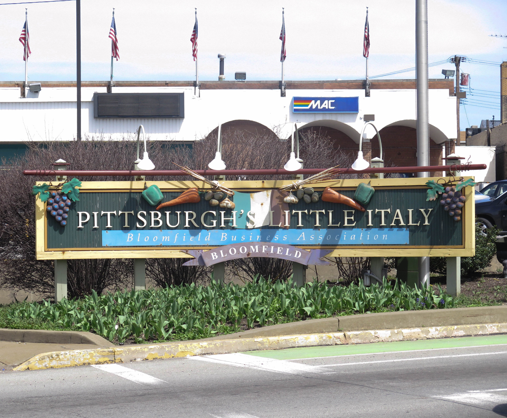
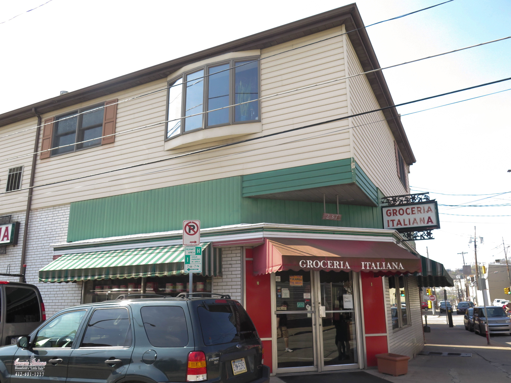
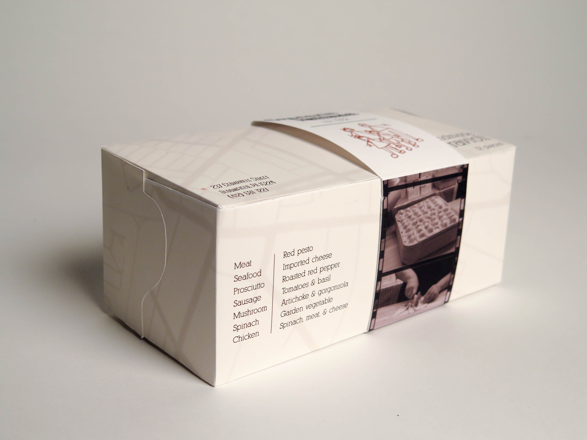
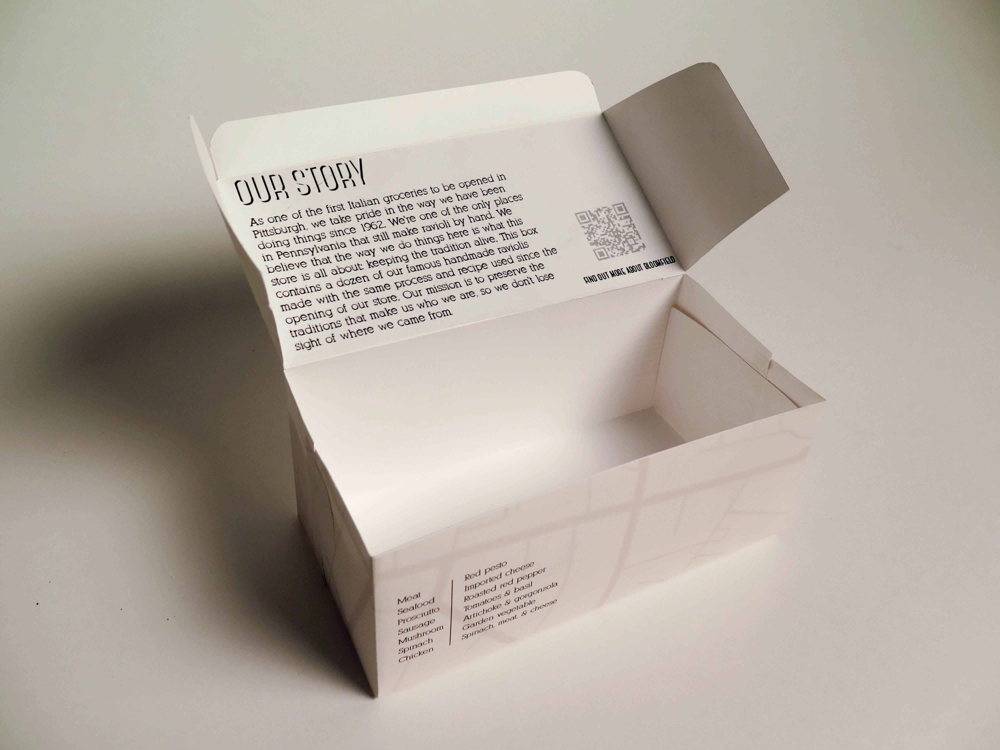
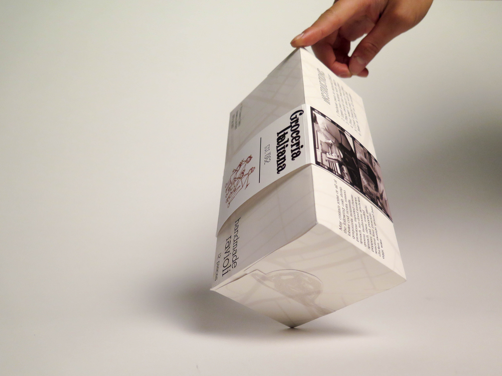

I collaborated with Ji Tae Kim and Lucy Yu to create an artifact representative of Bloomfield, a neighborhood in Pittsburgh with a mostly Italian-American population.
We visited Bloomfield several times over the course of the project, interacting with and interviewing its residents and storeowners who have observed how the neighborhood had changed over time from a hub for Italian-Americans to a more youthful, multicultural population.

One of Bloomfield's most notable stores is Groceria Italiana, a family-owned grocery store that has been a staple for Bloomfield residents for decades. We aimed to redesign the packaging for Groceria Italiana's staple product: its fresh, handmade raviolis. Our redesign combined a more modern aesthetic with traditional and


